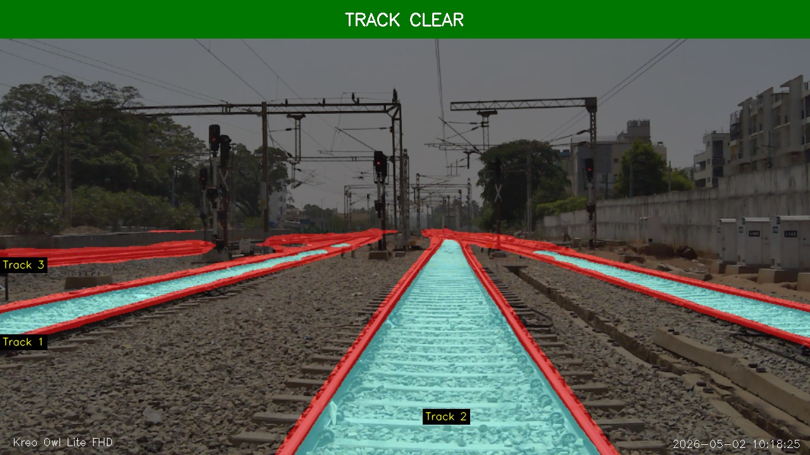
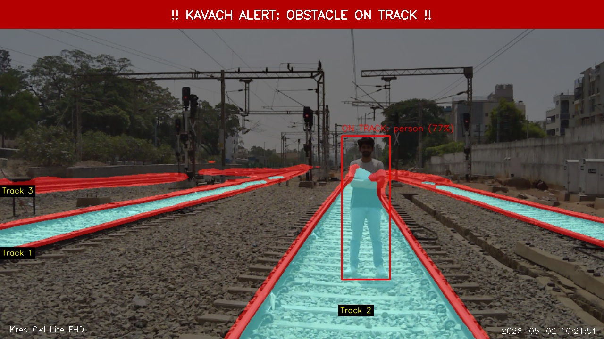
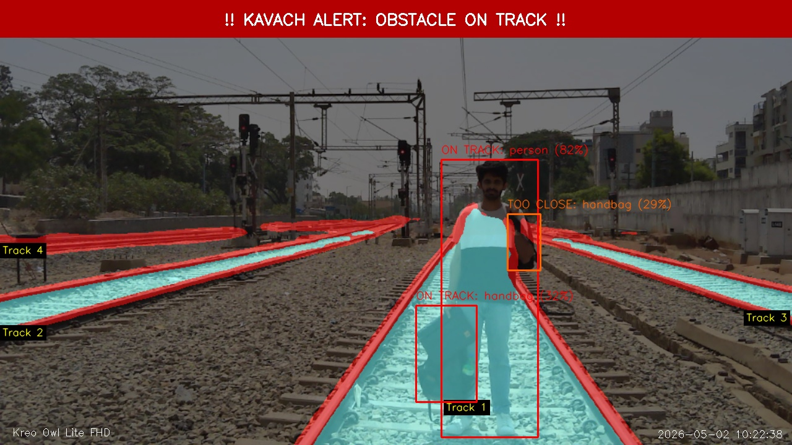
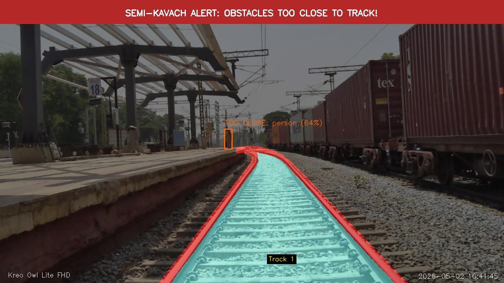
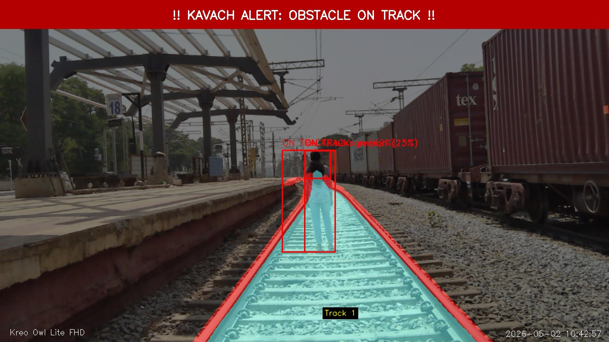
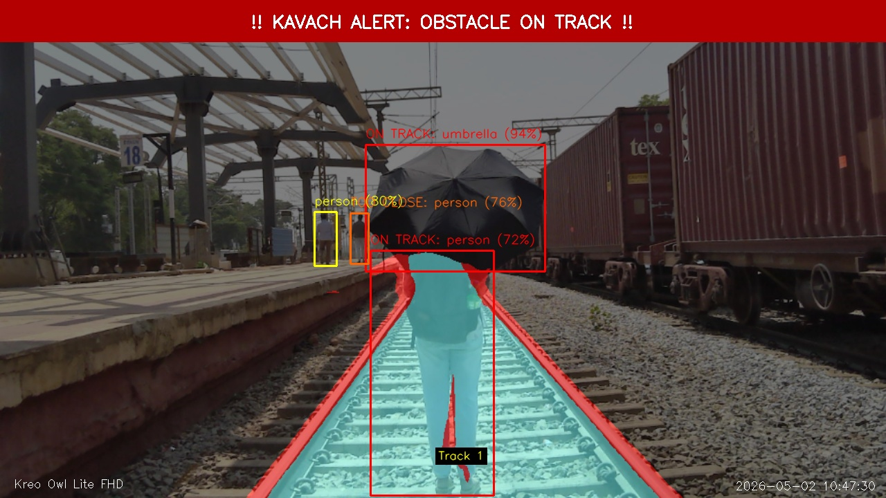

Real-time AI-powered railway obstacle detection. BiSeNetV2 semantic segmentation + YOLO11m object detection running in parallel at 30 FPS.
Railway accidents caused by obstacles — animals, people, vehicles at level crossings — are a critical safety problem globally. Traditional camera systems rely on human operators watching feeds manually, introducing dangerous reaction-time delays and attention fatigue.
Drishti Kavach (Hindi: Shield of Vision) automates this entirely. The system continuously watches camera feeds at up to ~30 FPS, segments the exact track region using BiSeNetV2, detects obstacles using YOLO11m, cross-references both outputs to determine risk, and issues real-time alerts.
| Risk Level | Condition | Alert |
|---|---|---|
| ON TRACK | Overlap ≥ threshold | Full Kavach Alert |
| TOO CLOSE | Dist < 80px | Semi Alert |
| NEAR | Dist < 213px | Warning |
| FAR | Dist ≥ 213px | Safe |
A multi-threaded producer-consumer pipeline separates frame capture, AI inference, and display into independent threads — ensuring smooth 30 FPS output regardless of model speed.






All code, weights configuration, training scripts, and the Streamlit dashboard are available on GitHub. Star the repo to stay updated.